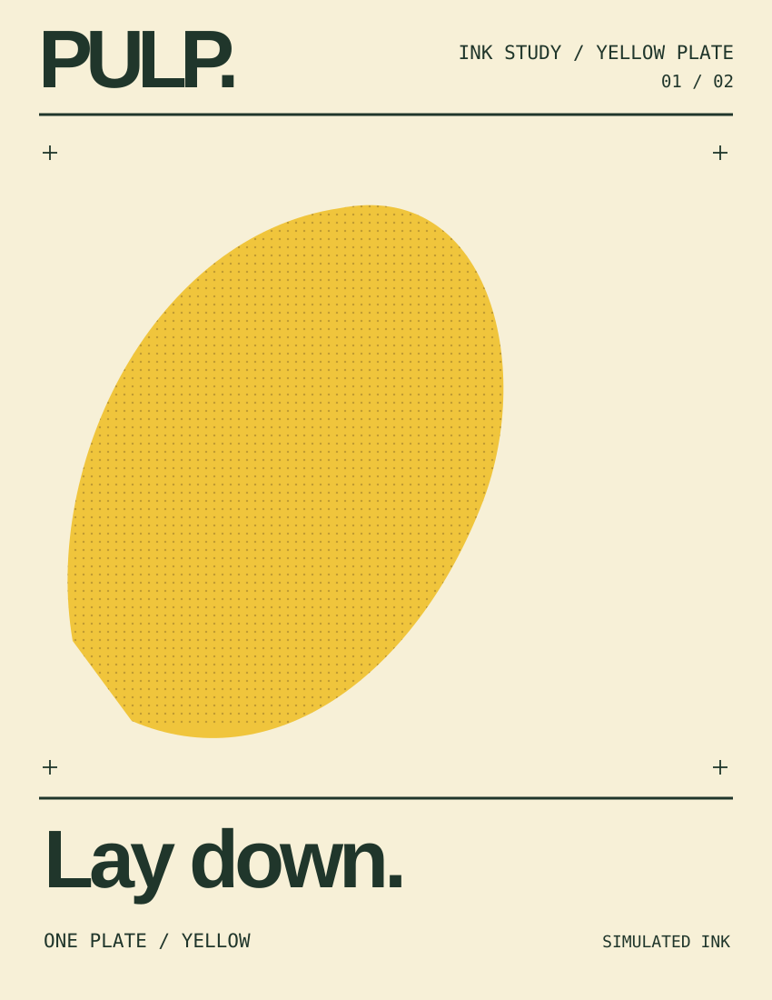

Ink separation study
One shape.
Two inks.
A yellow plate lays down the field. Add vermilion and a third color appears where the shapes cross. Both posters are editable simulated overprints.


Ink separation study
A yellow plate lays down the field. Add vermilion and a third color appears where the shapes cross. Both posters are editable simulated overprints.
